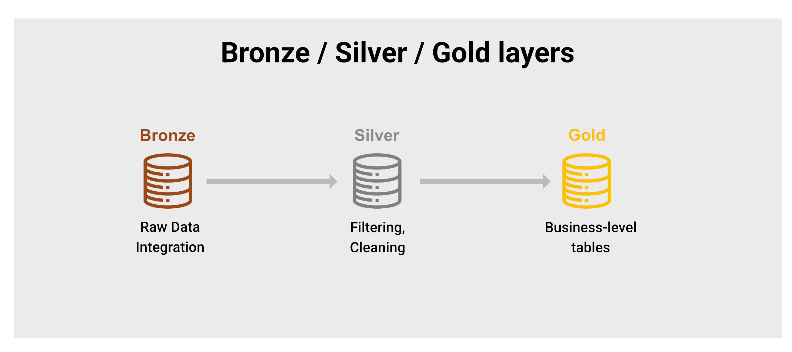

Introduction
As data engineers, we’re often on the front lines of GDPR compliance, designing and implementing systems that handle millions of users’ personal data. Whether you’re working at an e-commerce platform or any data-driven company, understanding GDPR isn’t just a legal requirement—it’s a core engineering skill.
This guide covers the essential GDPR concepts every data engineer should master, with practical implementations and real-world scenarios you might face in interviews or daily work.
Keep in mind that technical implementation is not a substitute for legal review.
What You’ll Learn in This Guide
This guide is structured to take you from foundational concepts to advanced implementation patterns:
🔐 Core Privacy Concepts - Master the technical differences between encryption, hashing, anonymization, and pseudonymization with practical examples
👤 PII Classification - Learn to identify and categorize personal data in complex data systems and pipelines
🏗️ Architecture Best Practices - Design privacy-compliant data platforms using proven patterns like Bronze/Silver/Gold layers
🔄 Right to Erasure Implementation - Build robust deletion workflows that work across distributed systems and backups
🚨 Incident Response - Handle PII exposure incidents with step-by-step procedures and prevention strategies
🔍 Monitoring & Testing - Implement automated compliance checks and continuous monitoring for GDPR violations
🎯 Interview Preparation - Practice common GDPR-related questions with expert-level responses
🛠️ Tools & Technologies - Explore the essential tech stack for building compliant data systems
Each section builds on previous concepts, so following the order will give you a comprehensive understanding of GDPR compliance from a data engineering perspective.
🔐 Understanding the Core Concepts: Encryption vs. Hashing vs. Anonymization vs. Pseudonymization
When working with sensitive data, especially under regulations like the GDPR, it’s crucial to understand the different techniques used to protect personal information. Terms like encryption, hashing, pseudonymization, and anonymization are often used interchangeably — but they serve very different purposes and have distinct legal implications.
Knowing the difference isn’t just technical nitpicking — it’s essential for data privacy, compliance, and trust. Misapplying one in place of another can expose you to security risks or regulatory violations. This section breaks down each concept with real-world examples, helping you choose the right approach depending on your use case and privacy requirements.
Let’s start with the fundamentals that often get confused:
Encryption
- What it is: Reversible transformation using a key and algorithm
- GDPR status: Data remains personally identifiable (still subject to GDPR)
- Use cases: Protecting data at rest (S3 + KMS) or in transit (HTTPS/TLS)
- Example: AES encryption of email addresses in your database
Here is an example of encryption use case:
- Input (plain email):
alice@example.com - Key (secret):
b2df428b9929d3ace7c598bbf4e496b2(128-bit AES key as hex for illustration) - Algorithm: AES-256 in CBC mode with a random IV (Initialization Vector)
- Output (encrypted email):
k7N8F7z3m2XkCjzj+9wZfw==(Base64-encoded encrypted result)
The output is not anonymized: with the correct key, it can be decrypted back to the original email. Because of that, GDPR still applies.
Hashing
- What it is: Irreversible, deterministic transformation (e.g., SHA-256, bcrypt)
- GDPR status: If properly implemented, no longer personally identifiable
- Use cases: Creating consistent but anonymous identifiers, password storage, data deduplication
- Key insight: Same input always produces same output, but you can’t reverse it
Here are examples of hashing use cases:
For General PII (emails, phone numbers, etc.):
import hashlib
# Input data
email = "alice@example.com"
salt = "your-application-specific-salt-2024"
# SHA-256 with salt
hashed_email = hashlib.sha256(f"{email}{salt}".encode()).hexdigest()
# Output: "a8b2c4d6e8f0a2b4c6d8e0f2a4b6c8d0e2f4a6b8c0d2e4f6a8b0c2d4e6f8a0b2"For Passwords (use bcrypt):
import bcrypt
# Input password
password = "MySecretP@ssw0rd!"
# bcrypt (includes built-in salting and multiple rounds)
hashed_password = bcrypt.hashpw(password.encode('utf-8'), bcrypt.gensalt())
# Output: b'$2b$12$3w1YAnbZpLoN8P3eEBg3KeX3uA3ZZ4okbKUIrGLGItK6aSR4lg3ZK'The hashing is irreversible - you can’t get the original data back. The salt prevents rainbow table attacks, and when properly implemented, the data is no longer personal under GDPR. This makes hashing particularly useful for creating anonymous but consistent identifiers for analytics while maintaining data utility.
Pseudonymization
- What it is: Reversible replacement of identifiers with tokens/UUIDs
- GDPR status: Still personally identifiable (GDPR applies)
- Use cases: Analytics while limiting PII exposure
- Implementation:
user_id→user_tokenwith secure mapping table
Here is an example of pseudonymization:
- Input (original user identifier):
user_id = 12345 - Pseudonymization method: Replace with a random
UUIDv4stored in a secure mapping table - Output (pseudonymized user_token):
user_token = "f47ac10b-58cc-4372-a567-0e02b2c3d479"
Mapping table (kept secure):
| user_id | user_token |
|---|---|
12345 | f47ac10b-58cc-4372-a567-0e02b2c3d479 |
The pseudonymization is reversible because you can look up the original ID using the mapping table. It’s useful for analytics pipelines or sharing data with third parties without direct PII, but still under GDPR since the mapping can reveal identities.
Anonymization
- What it is: Irreversible removal of all identifying elements
- GDPR status: No longer subject to GDPR
- Use cases: Long-term analytics, research datasets
- Example: Replacing names with “AAAA/BBBB”, removing all linkable attributes
Here is an example of anonymization:
- Input (original user record):
{
"user_id": 12345,
"email": "alice@example.com",
"age": 32,
"zip_code": "75001",
"purchase_history": ["book", "headphones"]
}-
Anonymization method:
- Remove or generalize direct identifiers (e.g., remove user_id, mask email)
- Aggregate or coarsen quasi-identifiers (e.g., use age ranges, broader regions)
-
Output (anonymized record):
{
"age_range": "30-39",
"region": "Île-de-France",
"purchase_history": ["book", "headphones"]
}It’s truly irreversible because there’s no mapping back to a person — identifiers are removed or generalized. When it’s done correctly, the data is no longer subject to GDPR. it’s particularly useful for statistical analysis, machine learning, or open data sharing where re-identification risk is eliminated.
When to Use What
| Technique | GDPR Status | Reversible? | Use Case |
|---|---|---|---|
| Encryption | Still PII | Yes (with key) | Data protection in storage/transit |
| Hashing | Not PII (if salted) | No | Anonymous identifiers, password storage |
| Pseudonymization | Still PII | Yes (with mapping) | Analytics while limiting exposure |
| Anonymization | Not PII | No | Public datasets, long-term research |
👤 What Constitutes PII in Data Engineering?
As a data engineer, you’re often working behind the scenes — but that doesn’t mean you’re distant from privacy concerns. In fact, you play a critical role in how personal data is collected, stored, and processed. To design compliant systems and pipelines, you first need to understand what qualifies as Personally Identifiable Information (PII).
PII isn’t just about names and emails — it can include anything that could directly or indirectly identify a person. And under frameworks like the GDPR, mishandling even seemingly harmless data points can lead to serious consequences. In this section, we’ll explore concrete examples of PII and why proper classification is foundational to building secure and privacy-aware data systems.
Direct PII
- Names, emails, phone numbers, addresses
- Social security numbers, passport IDs
- Credit card numbers, bank account details
Indirect PII
- Device IDs, IP addresses, session tokens
- GPS coordinates, precise timestamps
- Behavioral patterns that can uniquely identify users
- Photos (especially with faces), biometric data
Critical insight: Even seemingly innocent data like “user clicked button at 14:32:15 on January 15th from IP 192.168.1.1” can be personally identifiable when combined.
🏗️ Data Architecture Best Practices
Building a modern data platform isn’t just about scaling infrastructure — it’s about doing so securely, responsibly, and sustainably. As data volume and complexity grow, so do the risks tied to poor architectural decisions, especially when dealing with sensitive or regulated information.
This section outlines key best practices for designing robust, privacy-aware data architectures. From access controls and encryption to data lineage and auditability, we’ll cover the principles that help you strike the right balance between performance, compliance, and long-term maintainability. Whether you’re working with batch pipelines, real-time streams, or cloud-native tools, these practices are essential for building trust into your data stack.
Data Lake Storage
✅ DO:
- Separate buckets for PII-containing data
- Encrypt at rest (SSE-KMS) and in transit
- Use Parquet/Delta Lake for efficient deletions
- Tag objects containing PII for governance
- Implement strict access controls (IAM roles)
❌ AVOID:
- Mixing PII with non-PII data in same buckets
- Storing unencrypted dumps or CSV exports
- Using generic file naming without classification
Data Warehouse Design
-- Good: Pseudonymized fact table
CREATE TABLE fact_user_events (
user_token VARCHAR(255), -- Pseudonymized identifier
event_type VARCHAR(100),
timestamp TIMESTAMP,
page_url VARCHAR(500) -- No PII in URLs
);
-- Bad: Direct PII in analytics table
CREATE TABLE fact_user_events (
email VARCHAR(255), -- Direct PII
full_name VARCHAR(255), -- Direct PII
event_type VARCHAR(100),
timestamp TIMESTAMP
);Pipeline Architecture: Bronze, Silver, Gold
Designing privacy-aware data pipelines isn’t just about compliance — it’s about layering control and trust into your data stack. The Bronze/Silver/Gold architecture is a powerful pattern that helps separate raw, sensitive data from cleaned and privacy-safe analytics layers. This structure not only improves data quality and performance but also enforces GDPR principles like data minimization and access control at each stage. Let’s break down how each layer contributes to a compliant and scalable data platform.
Bronze Layer (Raw Ingestion):
├── Contains raw data including PII
├── Encrypted at rest
├── Restricted access
└── Retention policies applied
Silver Layer (Cleaned & Transformed):
├── Pseudonymization applied
├── PII separated from behavioral data
├── Data quality checks
└── Schema validation
Gold Layer (Analytics Ready):
├── Aggregated, anonymized data
├── No direct PII
├── BI-ready datasets
└── Public access within organization

📅 Data Retention Policies and Cross-Border Transfers
Beyond architectural patterns, GDPR compliance requires careful attention to data lifecycle management and geographic data governance. As data engineers working with cloud infrastructure and global systems, understanding retention policies and cross-border transfer requirements is essential for maintaining compliance at scale.
Data Retention Implementation
Automated Retention Policies by Data Category:
# Example retention policy configuration
RETENTION_POLICIES = {
'user_profiles': {
'retention_days': 365, # 1 year after account deletion
'deletion_method': 'hard_delete',
'backup_retention_days': 30
},
'behavioral_events': {
'retention_days': 730, # 2 years for analytics
'deletion_method': 'anonymize', # Convert to anonymous data
'backup_retention_days': 30
},
'transaction_data': {
'retention_days': 2555, # 7 years (legal requirement)
'deletion_method': 'archive_encrypted',
'backup_retention_days': 90
},
'system_logs': {
'retention_days': 90, # 3 months
'deletion_method': 'hard_delete',
'backup_retention_days': 7
}
}Automated Cleanup with Apache Airflow:
from datetime import datetime, timedelta
from airflow import DAG
from airflow.operators.python import PythonOperator
def cleanup_expired_data(data_category, **context):
"""Clean up data based on retention policy"""
policy = RETENTION_POLICIES[data_category]
cutoff_date = datetime.now() - timedelta(days=policy['retention_days'])
if policy['deletion_method'] == 'hard_delete':
# Delete from operational systems
delete_from_database(data_category, cutoff_date)
delete_from_data_lake(data_category, cutoff_date)
elif policy['deletion_method'] == 'anonymize':
# Convert to anonymous data for continued analytics
anonymize_data(data_category, cutoff_date)
elif policy['deletion_method'] == 'archive_encrypted':
# Move to encrypted cold storage
archive_data(data_category, cutoff_date)
# Log the cleanup for audit
log_retention_action(data_category, cutoff_date, policy['deletion_method'])
# DAG for daily retention cleanup
retention_dag = DAG(
'gdpr_retention_cleanup',
schedule_interval='@daily',
start_date=datetime(2024, 1, 1)
)
for category in RETENTION_POLICIES.keys():
cleanup_task = PythonOperator(
task_id=f'cleanup_{category}',
python_callable=cleanup_expired_data,
op_kwargs={'data_category': category},
dag=retention_dag
)Cross-Border Data Transfer Compliance
One of the most complex aspects of privacy compliance is handling data transfers across regions and jurisdictions. While cloud infrastructure makes it easy to store and process data globally, the GDPR imposes strict rules on where personal data can be sent, especially outside the EU.
As a data engineer, you need to design systems that respect data residency and implement transfer safeguards like Standard Contractual Clauses (SCCs) or adequacy decisions. This section shows how to classify user data geographically, route it to compliant regions, and partition storage accordingly — all while maintaining flexibility and operational efficiency in a distributed environment.
Geographic Data Classification:
# Data residency configuration
data_residency_rules:
eu_citizens:
allowed_regions: ['eu-west-1', 'eu-central-1']
transfer_mechanism: 'adequacy_decision' # or 'sccs', 'bcr'
us_citizens:
allowed_regions: ['us-east-1', 'us-west-2']
transfer_mechanism: 'domestic'
global_anonymous:
allowed_regions: ['*'] # Anonymized data can be processed anywhere
transfer_mechanism: 'not_applicable'Implementation with Cloud Infrastructure:
def route_data_by_residency(user_data, user_location):
"""Route data to appropriate region based on user location"""
# Determine data residency requirements
if user_location in ['EU', 'EEA', 'UK']:
target_region = 'eu-west-1'
compliance_requirements = ['gdpr', 'data_protection_act']
elif user_location == 'US':
target_region = 'us-east-1'
compliance_requirements = ['ccpa', 'state_privacy_laws']
else:
# Default to most restrictive compliance
target_region = 'eu-west-1'
compliance_requirements = ['gdpr']
# Route data to appropriate processing region
return {
'processing_region': target_region,
'storage_region': target_region,
'compliance_frameworks': compliance_requirements,
'transfer_safeguards': get_transfer_safeguards(user_location, target_region)
}
def get_transfer_safeguards(origin, destination):
"""Determine required safeguards for international transfers"""
transfer_map = {
('EU', 'US'): 'standard_contractual_clauses',
('EU', 'UK'): 'adequacy_decision',
('EU', 'CA'): 'adequacy_decision',
('US', 'EU'): 'standard_contractual_clauses'
}
return transfer_map.get((origin, destination), 'legal_review_required')Data Lake Partitioning by Region:
s3://company-data-lake/
├── region=eu/
│ ├── user_events/
│ └── profiles/
├── region=us/
│ ├── user_events/
│ └── profiles/
└── region=global/ # Only anonymized data
├── aggregated_metrics/
└── ml_training_data/
This approach ensures that personal data stays within appropriate jurisdictions while allowing anonymized insights to be processed globally, maintaining both compliance and operational efficiency.
🔄 Implementing Right to Erasure (Right to be Forgotten)
Under the GDPR, individuals have the “right to be forgotten” — the ability to request the complete deletion of their personal data from your systems. While the concept sounds simple, its implementation in a data engineering context can be technically complex.
Data is often spread across multiple tables, logs, backups, and systems — sometimes anonymized, sometimes not. Ensuring that deletion requests are handled consistently, thoroughly, and verifiably requires careful planning and the right architectural patterns.
In this section, we’ll explore practical strategies for implementing the right to erasure, including data modeling techniques, deletion workflows, and compliance tracking — so you can meet legal obligations without compromising system integrity.
One of the most technically challenging GDPR requirements is handling deletion requests across distributed systems.
Centralized Deletion Process
# Example Airflow DAG structure
def delete_user_data(user_id):
deletion_log = {
'user_id': user_id,
'timestamp': datetime.utcnow(),
'initiated_by': 'gdpr_request',
'status': 'started'
}
# 1. Delete from operational databases
delete_from_postgres(user_id)
deletion_log['postgres_status'] = 'completed'
# 2. Delete from data warehouse
delete_from_snowflake(user_id)
deletion_log['warehouse_status'] = 'completed'
# 3. Delete from data lake (via Spark job)
delete_from_s3_parquet(user_id)
deletion_log['datalake_status'] = 'completed'
# 4. Log the deletion for audit
log_deletion_audit(deletion_log)
return deletion_logBackup Management Strategy
Backup Retention Policy:
├── Production databases: 30 days maximum
├── Data lake snapshots: 30 days maximum
├── Archived data: Separate GDPR-compliant process
└── Development environments: No PII allowed
Deletion Timeline:
├── Day 0: User requests deletion
├── Day 0: Immediate deletion from active systems
├── Day 1-30: Data exists only in backups
└── Day 30+: Complete erasure achieved
🚨 Incident Response: When PII Leaks into Public Tables
Even in well-architected systems, mistakes happen — and when they do, exposing Personally Identifiable Information (PII) in publicly accessible tables or logs can become a critical incident with legal, operational, and reputational consequences.
As a data engineer, you’re often on the front line of detection and response. Knowing what to do when PII leaks — how to identify it, contain it, communicate it, and prevent it from happening again — is a vital part of responsible data management.
This section walks through a practical incident response plan tailored for data teams, covering detection strategies, root cause analysis, remediation steps, and postmortem practices to help you respond quickly and effectively when sensitive data ends up where it shouldn’t.
Here’s a step-by-step response plan:
Immediate Actions (0-30 minutes)
-
Contain the exposure
-- Option 1: Drop the column immediately ALTER TABLE public_analytics DROP COLUMN email; -- Option 2: Create a masked view CREATE OR REPLACE VIEW public_analytics_safe AS SELECT user_token, event_type, timestamp FROM public_analytics; -
Restrict access
-- Remove public access temporarily REVOKE SELECT ON public_analytics FROM public_role;
Investigation Phase (30 minutes - 2 hours)
- Audit the impact using data lineage
# Example with Apache Atlas or similar def trace_column_usage(table_name, column_name): downstream_tables = get_downstream_dependencies(table_name) dashboard_usage = get_dashboard_references(table_name, column_name) export_logs = get_export_history(table_name, column_name) return { 'affected_tables': downstream_tables, 'affected_dashboards': dashboard_usage, 'potential_exports': export_logs }
Documentation and Prevention
-
Log the incident
incident_log = { 'incident_id': generate_uuid(), 'type': 'pii_exposure', 'affected_table': 'public_analytics', 'exposed_column': 'email', 'discovery_time': datetime.utcnow(), 'containment_time': datetime.utcnow() + timedelta(minutes=15), 'affected_users': count_distinct_users(), 'remediation_steps': [ 'Column dropped from public table', 'Access logs audited', 'DPO notified' ] } -
Implement prevention measures
# Test example def test_no_pii_in_public_tables(): """Test that public tables don't contain PII columns""" pii_patterns = ['email', 'phone', 'ssn', 'address'] for table in get_public_tables(): columns = get_table_columns(table) for column in columns: if any(pattern in column.lower() for pattern in pii_patterns): raise ValueError(f"PII column {column} found in public table {table}")
🔍 Monitoring and Testing for GDPR Compliance
Staying GDPR-compliant isn’t a one-time task — it’s an ongoing process that requires continuous monitoring, testing, and validation across your data systems. From ensuring data minimization to tracking access and verifying deletion workflows, compliance must be built into your day-to-day operations.
For data engineers, this means going beyond pipelines and models — it means setting up the right observability, alerts, and automated checks to catch issues before they become violations. Whether it’s scanning for exposed PII, auditing access logs, or testing erasure workflows, proactive compliance reduces risk and builds trust.
In this section, we’ll cover practical tools, techniques, and metrics to help you monitor and test your data infrastructure for GDPR alignment — without slowing down innovation.
Automated PII Detection
You can build or found ready-to-use functions like the one below:
import re
def detect_pii_in_dataframe(df, table_name):
"""Scan DataFrame for potential PII"""
alerts = []
# Email detection
email_pattern = r'\b[A-Za-z0-9._%+-]+@[A-Za-z0-9.-]+\.[A-Z|a-z]{2,}\b'
# Phone number detection
phone_pattern = r'\b\d{3}-\d{3}-\d{4}\b|\b\(\d{3}\)\s*\d{3}-\d{4}\b'
# Check each column
for column in df.columns:
sample_data = df[column].astype(str).head(100)
if any(re.search(email_pattern, str(value)) for value in sample_data):
alerts.append(f"Potential emails detected in {table_name}.{column}")
if any(re.search(phone_pattern, str(value)) for value in sample_data):
alerts.append(f"Potential phone numbers detected in {table_name}.{column}")
return alertsAlso it’s important to notice that most cloud providers have tools in order to detect PII automatically.
Data Contracts for PII Governance
# Example data contract
tables:
fact_user_events:
owner: analytics_team
contains_pii: false
allowed_columns:
- user_token # Pseudonymized ID only
- event_type
- timestamp
- session_id
forbidden_patterns:
- email
- phone
- user_id # Direct identifier not allowed
tests:
- no_pii_detected
- user_token_is_pseudonymized🎯 Common Interview Questions and Responses
Q: “How do you handle GDPR compliance in a microservices architecture?”
Good Answer: “I implement a distributed deletion orchestrator that maintains a registry of all services handling user data. When a deletion request comes in, the orchestrator sends deletion commands to each registered service via message queues, with retry logic and audit logging. Each service is responsible for its own data deletion and confirms completion back to the orchestrator.”
Q: “What’s the difference between anonymization and pseudonymization for analytics?”
Good Answer: “Pseudonymization allows us to maintain user-level analytics while protecting identity—we can still track user journeys and behavior patterns using tokens. Anonymization removes that granularity but eliminates GDPR obligations entirely. I typically use pseudonymization for most analytics and only anonymize for long-term research datasets or when sharing data externally.”
Q: “How do you ensure data minimization in your pipelines?”
Good Answer: “I implement data minimization through schema validation and data contracts. Our ingestion layers only accept predefined schemas, and I use tools like dbt to enforce that downstream models only select necessary columns. We also implement TTL (time-to-live) policies on different data categories—behavioral data might be kept for 2 years while direct PII is deleted after 1 year unless legally required.”
🛠️ Tools and Technologies
Essential Tools for GDPR-Compliant Data Engineering
- Apache Spark: Distributed deletion and anonymization jobs
- Delta Lake: ACID transactions for reliable deletions
- dbt: Data transformation with built-in testing for PII detection
- Apache Airflow/Dagster: Orchestrating complex deletion workflows
- AWS KMS/Azure Key Vault/Cloud KMS: Key management for encryption
- DataHub/Apache Atlas: Data lineage and governance
- Great Expectations/Soda: Data quality and PII detection tests
Sample Tech Stack
Data Ingestion: Kafka + Schema Registry
Data Lake: S3 + Delta Lake (encrypted with KMS)
Data Processing: Spark on Kubernetes
Data Warehouse: Snowflake (with masking policies)
Orchestration: Airflow
Monitoring: DataDog + custom PII detection alerts
Governance: DataHub for lineage tracking
📝 Key Takeaways for Data Engineers
-
Design for Privacy from Day One: It’s much easier to build GDPR compliance into your architecture than to retrofit it later.
-
Separate Concerns: Keep PII separate from behavioral data, and always pseudonymize at the earliest safe point in your pipeline.
-
Automate Compliance: Manual processes for deletion, detection, and auditing don’t scale. Build automated systems with proper monitoring.
-
Document Everything: GDPR requires you to demonstrate compliance, not just achieve it. Audit logs and data lineage are crucial.
-
Test Continuously: Implement automated tests for PII detection and compliance verification in your CI/CD pipelines.
-
Plan for the Worst: Have incident response procedures ready for data breaches or accidental PII exposure.
Remember: GDPR compliance isn’t just about avoiding fines—it’s about building trustworthy, sustainable data systems that respect user privacy while enabling powerful analytics. As data engineers, we’re the guardians of this balance.
📚 GDPR Glossary for Data Engineers
A
Anonymization - The irreversible process of removing or altering personal data so that individuals cannot be identified, directly or indirectly. Once properly anonymized, data is no longer subject to GDPR.
Article 30 - GDPR requirement for organizations to maintain records of all data processing activities, including purposes, data categories, retention periods, and security measures.
B
Biometric Data - Personal data resulting from specific technical processing relating to physical, physiological, or behavioral characteristics (e.g., fingerprints, facial recognition data, voice patterns).
Breach Notification - Legal requirement to report personal data breaches to supervisory authorities within 72 hours and to affected individuals when the breach poses high risk.
Bronze/Silver/Gold Architecture - Data lake pattern where Bronze contains raw data with PII, Silver has cleaned/pseudonymized data, and Gold contains aggregated/anonymized analytics data.
C
Consent - Freely given, specific, informed agreement to data processing. Must be as easy to withdraw as to give. Technical implementation requires granular consent management systems.
Controller - The entity that determines the purposes and means of processing personal data. In data engineering contexts, often the business unit requesting data processing.
D
Data Lineage - Documentation of data flow from source to destination, essential for understanding privacy implications and implementing deletion requests.
Data Minimization - GDPR principle requiring that personal data collection and processing be limited to what is necessary for the specified purposes. Implemented through schema validation and column-level access controls.
Data Protection Impact Assessment (DPIA) - Mandatory risk assessment for high-risk data processing activities. Data engineers often provide technical input on system architecture and security measures.
Data Subject - The identified or identifiable natural person whose personal data is being processed.
Differential Privacy - Mathematical framework that provides quantifiable privacy guarantees by adding controlled noise to datasets or query results.
E
Encryption at Rest - Protection of stored data using cryptographic techniques (e.g., AES-256). Common implementations include AWS KMS, Azure Key Vault, or Google Cloud KMS.
Encryption in Transit - Protection of data during transmission using protocols like TLS/HTTPS, ensuring data cannot be intercepted during transfer.
Event Sourcing - Architectural pattern that stores all changes as immutable events, providing complete audit trails essential for GDPR compliance demonstration.
G
GDPR (General Data Protection Regulation) - EU regulation 2016/679 that governs personal data protection and privacy for individuals within the EU and EEA.
H
Hashing - One-way mathematical transformation that converts input data into fixed-size output. When properly salted, can render personal data non-identifiable.
Hard Delete - Permanent removal of data from all systems, including backups and archives. Required for implementing right to erasure.
I
Identifiable Natural Person - Someone who can be identified directly or indirectly through combinations of data points (name, ID number, location data, online identifiers, or physical/physiological characteristics).
K
K-Anonymity - Privacy model where each individual is indistinguishable from at least k-1 other individuals in the dataset. Minimum k=5 is often considered acceptable for public data release.
Key Management Service (KMS) - Cloud service for creating and managing cryptographic keys used for data encryption. Essential for GDPR-compliant data protection.
L
Lawful Basis - Legal justification for processing personal data under GDPR (consent, contract, legal obligation, vital interests, public task, or legitimate interests).
L-Diversity - Enhancement to k-anonymity that ensures sensitive attributes have sufficient diversity within each anonymity group.
Legitimate Interest - One of six lawful bases for processing personal data, requiring balance between business needs and individual privacy rights.
P
Personal Data - Any information relating to an identified or identifiable natural person, including names, emails, IP addresses, device IDs, and behavioral data.
Processor - Entity that processes personal data on behalf of the controller. Cloud providers and SaaS vendors typically act as processors.
Pseudonymization - Reversible replacement of identifying fields with artificial identifiers (tokens, UUIDs). Data remains subject to GDPR as it can be re-identified.
Q
Quasi-Identifier - Data attributes that are not unique identifiers individually but can identify individuals when combined (e.g., age + zip code + gender).
R
Right to Erasure (Right to be Forgotten) - Individual’s right to have personal data deleted from all systems, including backups, within one month of request.
Right to Portability - Individual’s right to receive their personal data in structured, commonly used, machine-readable format and transmit it to another controller.
Right to Rectification - Individual’s right to have inaccurate personal data corrected or incomplete data completed.
Retention Policy - Defined rules for how long different categories of personal data are kept, aligned with business needs and legal requirements.
S
Schema Registry - Service that stores and validates data schemas, used to enforce data contracts and prevent PII from entering unauthorized systems.
Soft Delete - Marking data as deleted without physically removing it, typically inadequate for GDPR compliance as data remains accessible.
Special Categories of Personal Data - Sensitive data including racial/ethnic origin, political opinions, religious beliefs, trade union membership, genetic data, biometric data, health data, and sexual orientation. Requires explicit consent or other specific lawful basis.
Standard Contractual Clauses (SCCs) - EU-approved contract terms that provide adequate safeguards for international personal data transfers to countries without adequacy decisions.
Supervisory Authority - National data protection authority responsible for GDPR enforcement (e.g., ICO in UK, CNIL in France).
T
Tokenization - Process of replacing sensitive data with non-sensitive tokens while maintaining referential integrity. Often used in payment processing and data analytics.
TTL (Time To Live) - Automatic expiration mechanism for data records, used to implement retention policies and ensure data doesn’t persist beyond necessary periods.
U
UUID (Universally Unique Identifier) - 128-bit identifier commonly used for pseudonymization in data systems. Format: xxxxxxxx-xxxx-xxxx-xxxx-xxxxxxxxxxxx.
✅ Conclusion
GDPR compliance isn’t just a legal checkbox — it’s a technical discipline, and as data engineers, we’re at the heart of it.
From understanding the nuances of encryption, hashing, pseudonymization, and anonymization, to implementing deletion workflows, access controls, and data retention policies, this guide has covered the essential tools, patterns, and responsibilities you need to design privacy-aware systems. You’ve also seen how to prepare for incidents, build monitoring and testing pipelines, and respond confidently to GDPR-related interview questions.
Ultimately, building GDPR-compliant data infrastructure is about more than avoiding fines — it’s about earning trust, minimizing risk, and enabling responsible innovation. When we embed privacy into our architecture from day one, we don’t just protect users — we future-proof our platforms.
Whether you’re tackling compliance challenges in a fast-moving startup or a regulated enterprise, remember: you are not just a builder of pipelines — you’re a guardian of privacy.
This guide provides a foundation for GDPR-compliant data engineering. Always consult with your legal team for specific compliance requirements in your jurisdiction and industry.